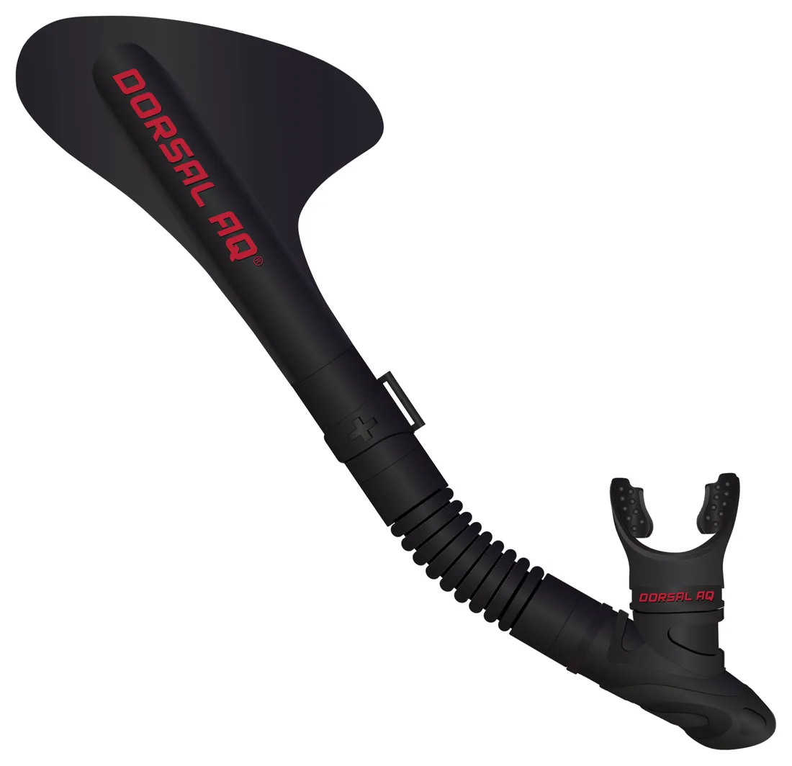
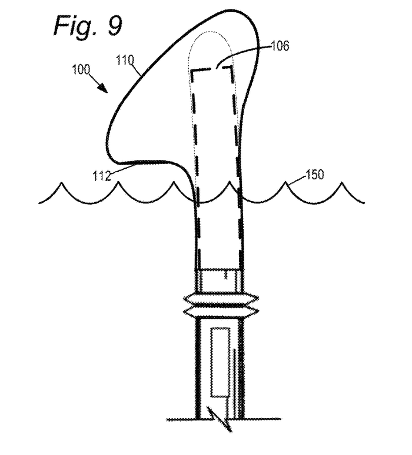
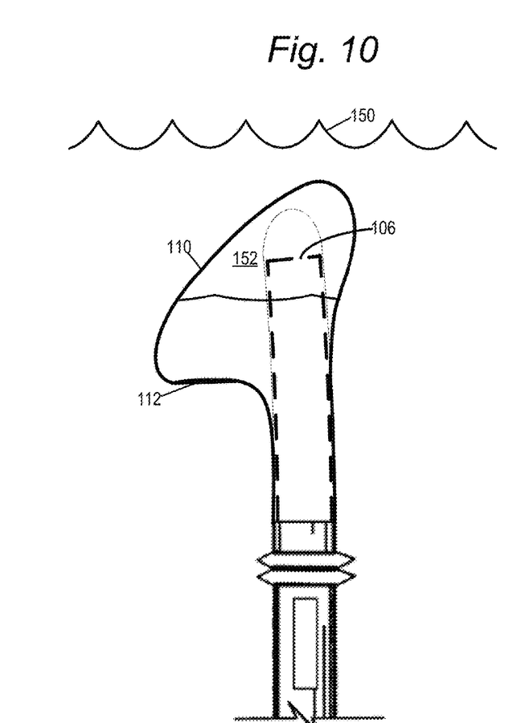
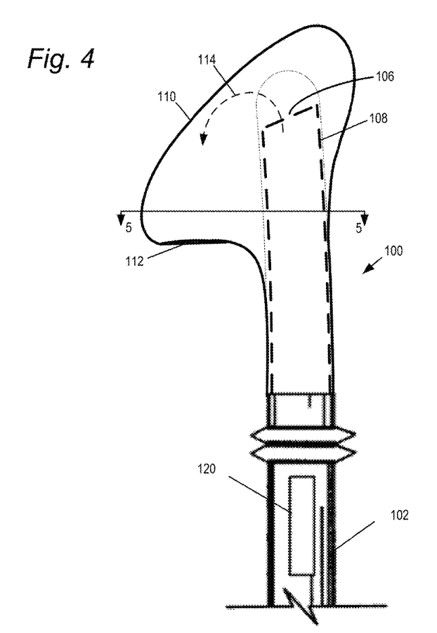
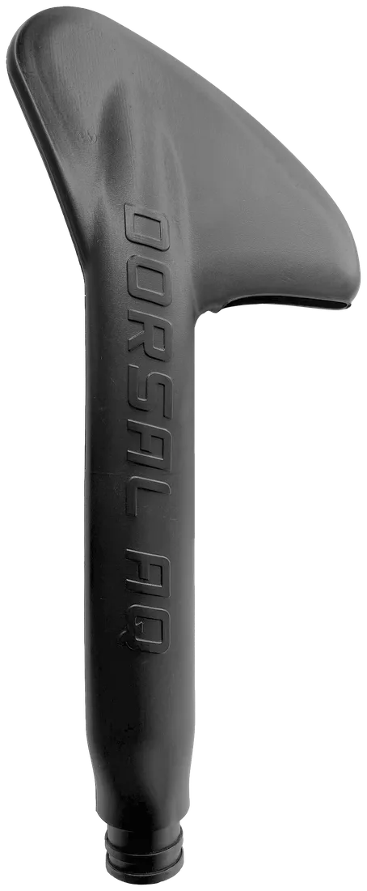
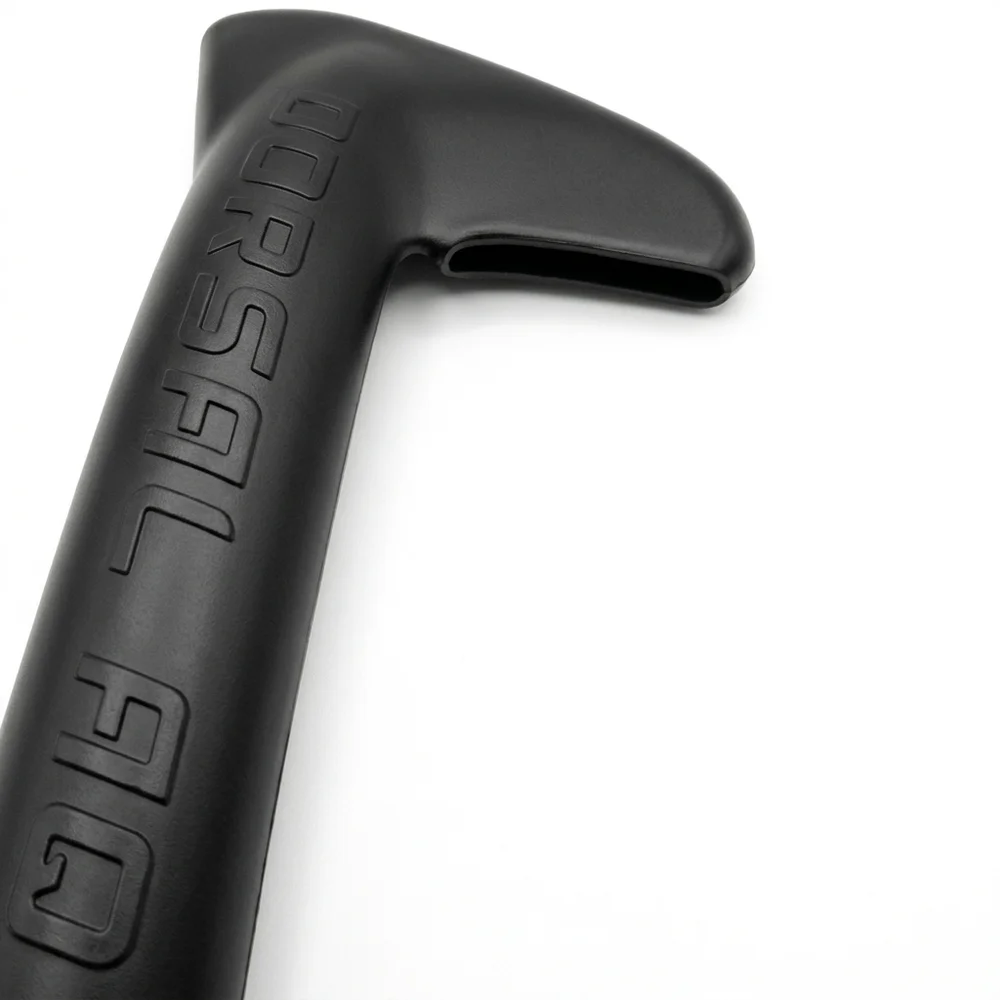
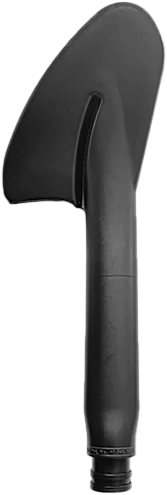
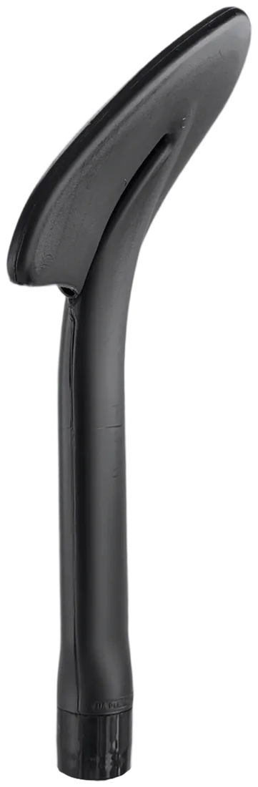
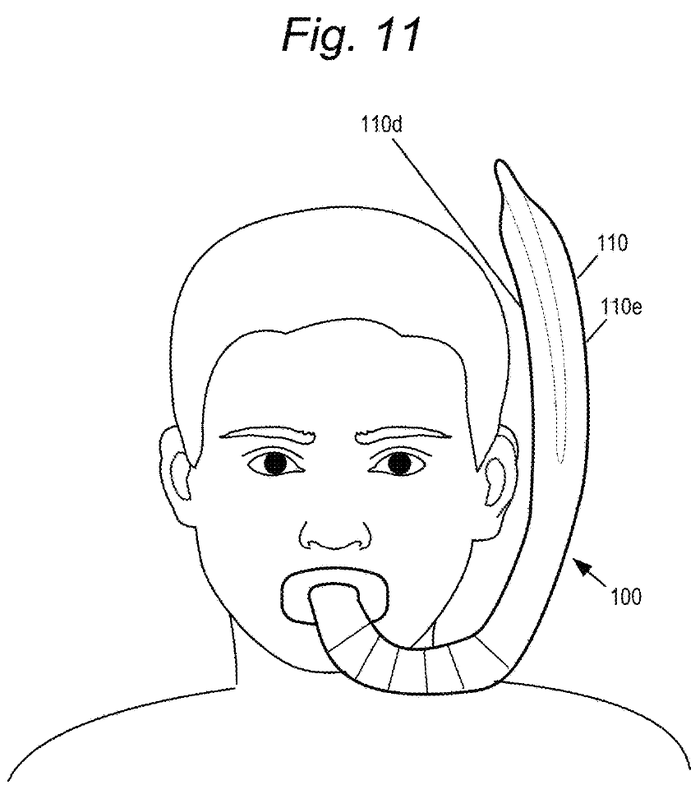

Type 1
Classic (“wet”) snorkel
An open J-shaped tube. Anything that reaches the top, from splash and wave wash-over to a dive, goes straight down the tube and has to be blown out.
Available for licensing · U.S. Patent 10,549,829
Conventional dry snorkels rely on a mechanical float valve to seal the airway upon submersion. The Dorsal AQ eliminates this component entirely. Instead, its patented dorsal-fin housing utilizes a hydrodynamic diving-bell geometry to trap a pocket of air over the intake opening, preventing water ingress without moving parts. This solid-state design removes failure points caused by mechanical wear, seal degradation, or particulate fouling from sand and marine debris.
Issued patent · Working prototype · Open to license or manufacturing partnership

PatentedU.S. Patent 10,549,829 B1
The market today
Existing snorkels either leave the tube open, deflect water with a guard, or seal the tube with a floating valve. Each has a known weakness. Dorsal AQ keeps water out with trapped air and the shape of the housing.
Type 1
An open J-shaped tube. Anything that reaches the top, from splash and wave wash-over to a dive, goes straight down the tube and has to be blown out.
Type 2
Adds a splash guard (a deflector) at the top and usually a purge valve at the bottom. It deflects spray, but water still enters when a wave rolls over the top or the snorkel is submerged.
Type 3
Adds a buoyant float valve that should rise and seal the tube when submerged. The valve is the weak point: sand, salt and wear can make it stick or leak, and the valve adds resistance at the surface.
New category
Engineered without mechanical valves, the Dorsal AQ features a closed, fin-shaped housing that surrounds the top of the breathing tube, with a single air slot positioned at its lowest edge. When submerged, this housing traps a protective pocket of air that prevents water from reaching the tube opening.
On the surface, the enclosed design blocks waves, splashes, sea spray and rain of any intensity from entering the airway.
Side-by-side
Each row is a question a product team will ask. The Dorsal AQ column is highlighted.
| Feature | Classic | Semi-dry | Dry (float valve) | Dorsal AQ |
|---|---|---|---|---|
| How water is kept out | Not kept out. Open tube | Splash guard deflects spray | Float valve seals the tube; splash guard on top | Trapped air pocket in a closed housing (diving-bell principle) |
| Surface splash and spray | Enters tube | Mostly deflected | Mostly deflected | Blocked Opening sits high inside a closed shell; the only inlet faces down |
| Wave washing over the top | Floods | Water enters | Depends on valve response | Blocked Air pocket forms the moment the slot goes under |
| Full submersion (surface dive) | Floods | Floods | Sealed, if the valve works | Protected to a design depth set by housing volume and slot-to-opening distance |
| Moving parts at the top | None | None, or a hinged guard | Float, seat, cage and often a hinge | None |
| Typical failure mode | Flooding | Flooding in waves and dives; guard can crack | Valve sticks, clogs or wears, then leaks without warning | No mechanism to fail. Protection comes from the shape itself |
| Airflow at the top | Unobstructed | Lightly baffled | Air passes around the valve, adding resistance | Unobstructed opening inside an open air chamber |
| Exhaled-air management | Not addressed | Not addressed | Not addressed | Slanted opening steers exhaled air toward the slot to reduce rebreathing |
| Clearing after surfacing | Hard blast clear | Blast clear, helped by purge valve | Purge valve for seepage | Self-draining. Water falls back out of the slot |
| Upkeep | Rinse | Rinse; check guard | Rinse and inspect the valve after each use | Rinse. Nothing to inspect or replace |
| Hydrodynamic profile | Round tube | Round tube with guard head | Bulky valve head | Dorsal-fin shape with concave/convex sides contoured to the head |
The comparison describes typical designs in each category; individual products vary. Dorsal AQ characteristics are as described in U.S. Patent 10,549,829.
How it works
In 1535, Guglielmo de Lorena dove in a diving bell: an upside-down chamber that stays full of air because water can't push the air out. Dorsal AQ builds that principle into a fin-shaped housing at the top of the snorkel.

Patent Fig. 9: at the surface
Air enters through a slot in the flat bottom edge of the fin. The tube's opening is high inside the closed housing, so splash, spray and rain can't fall in.

Patent Fig. 10: fully submerged
When the housing goes under, water can rise only partway inside. The trapped air compresses slightly but stays around the tube opening and keeps water out.

Patent Fig. 4: cutaway of the housing
Water falls back out of the slot and the air pocket is still in place. A slanted tube opening directs exhaled air toward the slot so it isn't rebreathed.

Anatomy
Select a number on the photo or in the list.

Intellectual property
This is an informal summary, not a legal interpretation. The issued claims control.
The patent issued after examination against earlier snorkel patents and publications in the same class (B63C 11/205), including references to Monnich, Pan, Kawashima, Christianson, Wheelwright, McCarthy and Shiue, as well as the inventors' own earlier work (U.S. 6,513,520).
For manufacturers
The design removes the most complex and failure-prone assembly in a dry snorkel and replaces it with a single shaped part.
No float, valve seat, cage, hinge or spring in the dry top. Fewer components mean simpler assembly and fewer quality-control checkpoints.
The housing is a hollow, valve-free shell, a shape suited to conventional plastic molding processes such as blow molding.
Valve sticking and wear are the classic dry-snorkel complaint. With no valve, that failure mode and its returns are designed out.
The dorsal-fin silhouette stands apart on the shelf and offers a large, flat surface for molded or printed branding.



Anthony Vinokur, co-inventor, U.S. Patent 10,549,829“As an engineer, I knew that light plastic valve, with no spring and moved only by its own buoyancy, was the Achilles' heel of every dry snorkel. Any degradation in its fit means failure. So I removed it and used plain air to block the water.”
FAQ
Existing dry snorkels seal the tube mechanically with a buoyant float valve. Dorsal AQ has no valve. Its closed, fin-shaped housing holds a pocket of air around the tube opening whenever it's submerged, so water is kept out by air pressure and geometry, with no moving parts.
Yes. U.S. Patent 10,549,829 issued February 4, 2020, and its status is active. The 3.5-year maintenance fee was paid on time on July 24, 2023. The next (7.5-year) fee window opens in February 2027.
The innovation is in the top housing. The prototype top joins the breathing tube at a simple fitting, and the rest of the snorkel (mouthpiece, flexible lower tube, purge valve, mask keeper) can follow conventional designs. That makes it a candidate for adding to an existing product line.
The patent has issued and working prototypes have been built (shown on this page). Technical details and prototype evaluation can be discussed with qualified parties, under a non-disclosure agreement where appropriate.
The inventors welcome conversations about exclusive or non-exclusive licensing, manufacturing partnerships, and outright patent acquisition. Use the inquiry form below to start.
Licensing & manufacturing
This page is for information only; nothing here is offered for retail sale. If you're a manufacturer, brand or investor, we'd be glad to talk.
Prefer email? anthony@dorsalaq.dev